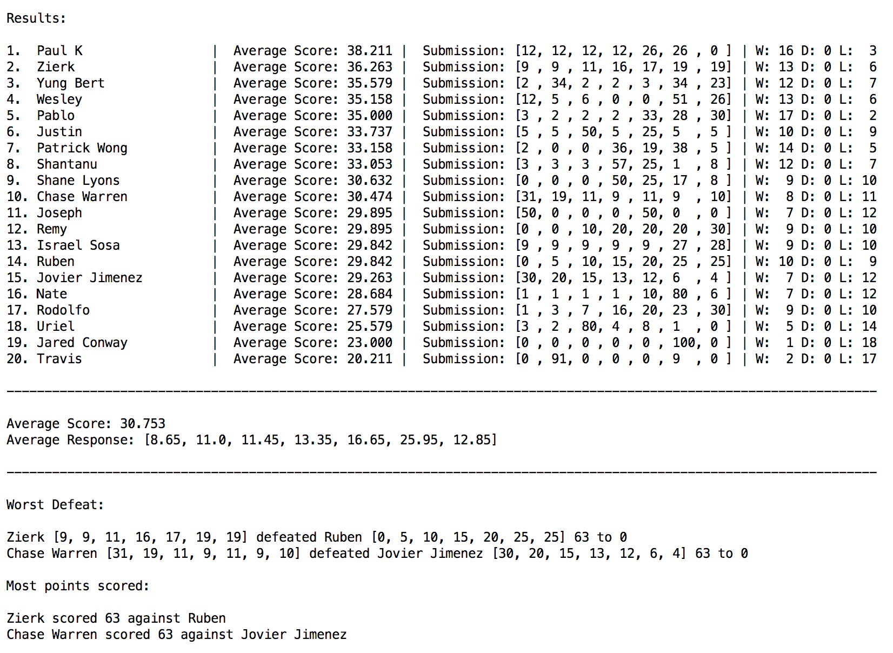

Structure/Rules:
- 7 battlefields, up to 100 soldiers
- Battlefield N is worth N + 5 points (6, 7, ..., 12 for fields 1-7)
- **********Soldiers "carry on" (described below)*************:
- This round, soldiers "carry on". For every match between two people, the scoring will be done as follows:
- Battlefield 1 will be determined first. The winner gets 6 points, and the loser gets 0. One-third (rounded down) of the winning side's soldiers will carry on to battlefield 2. None of the losing side's soldiers will continue.
- Next, battlefield 2 will be scored. Whatever number the winning side originally put on battlefield 2 plus 1/3 of the soldiers they put on battlefield 1 will fight against the soldiers the loser put on battlefield 2. The winner of this field will take 1/3 of their soldiers on field 2 and move them to battlefield 3.
- This continues for fields 3-7.
- * In the event of a tie, all soldiers from both fields die, and both players get 0 points for that field.
- To fully understand how scoring works, you should read the example match further down.
Examples of VALID submissions:
- 50, 35, 10, 0, 0, 0, 5 (7 nonnegative integers, sum <= 100)
17,3,17,3,17,3,39
Examples of INVALID submissions:
- 99,0,0,0,0,0,0 or 0,0,0,0,0,1,100 (more than 100 soldiers)v
- 45,45,1,1,1,1,1,1 (8 numbers, but only 7 battlefields exist)
- 50.5, 49.5, 0, 0, 0, 0, 0 (some entries are not nonnegative integers)
Example match between 2 players A, B:
A submits 1, 27, 72, 0, 0, 0, 0
B submits 90, 10, 0, 0, 0, 0, 0
B wins battlefield 1 and gets 6 points. 1/3 ( = 30) of his soldiers move on to battlefield 2, so he now has 40 soldiers on field 2. He wins that field (40 to 10), and so he moves 13 of his soldiers to battlefield 3. A wins that field, then moves 24 soldiers to field 4.
Similarly, A wins fields 5 and 6 with 8 soldiers on field 5 and 2 soldiers on field 6. On field 7, A's 2 soldiers from field 6 both die, so he has 0 soldiers on field 7. So A and B tie on field 7, and get 0 points each for field 7.